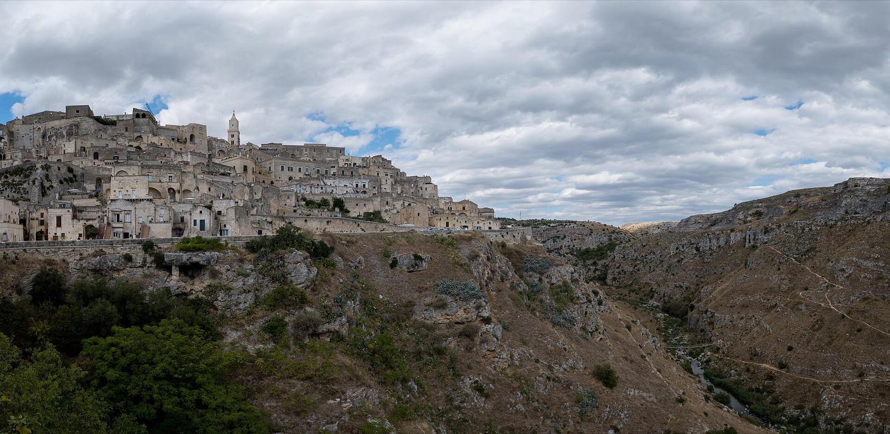
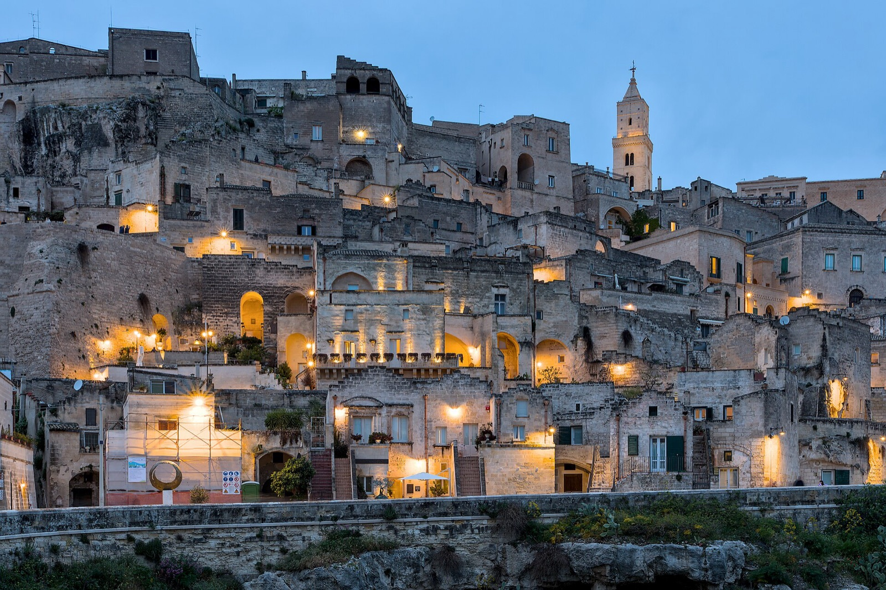
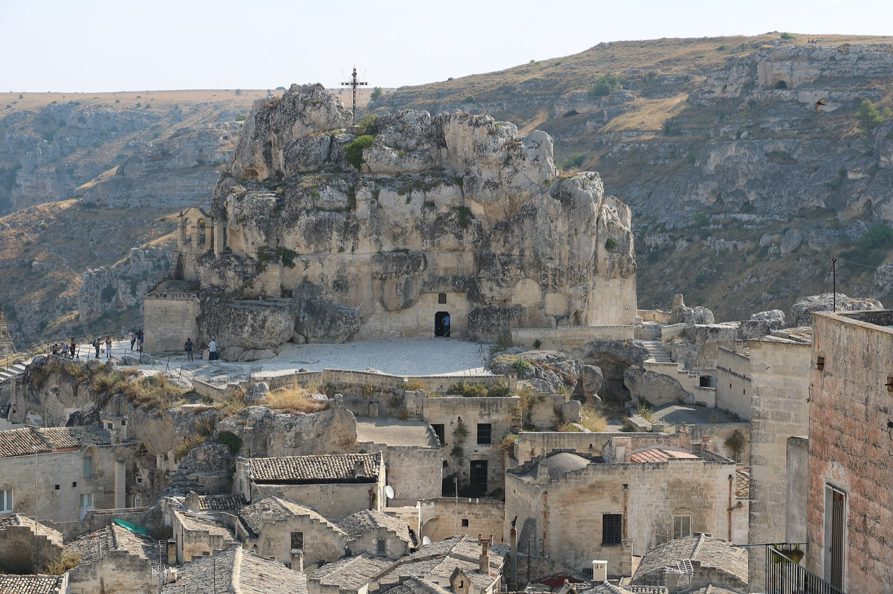
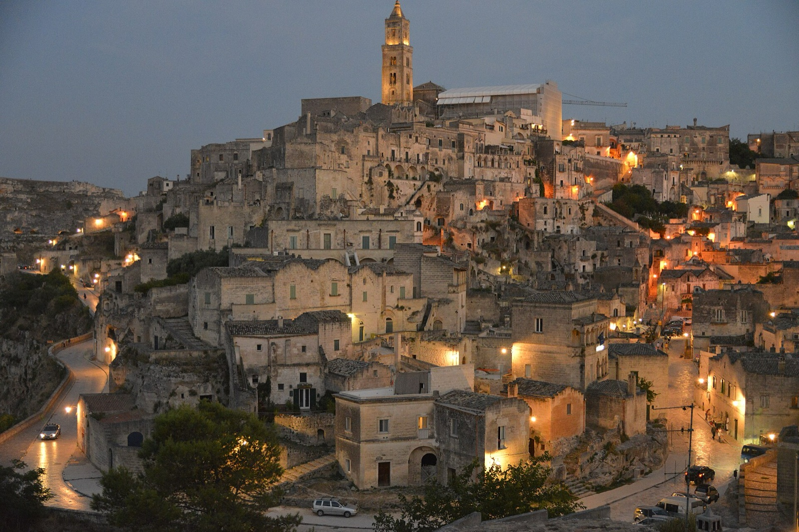
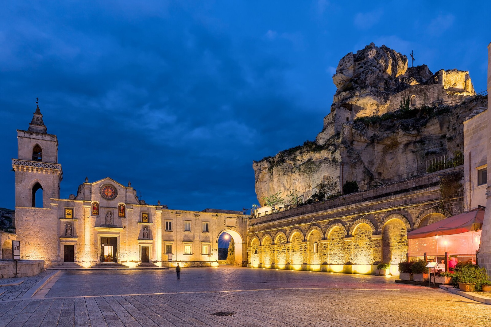

Город, целиком высеченный в скале, — и один из старейших непрерывно населённых городов мира.
После сказочного Альберобелло мы переезжаем туда, где время измеряется не годами, а тысячелетиями.
Матера выросла прямо из скалы над каньоном реки Гравина. Люди живут здесь по меньшей мере девять тысяч лет — в пещерах, превращённых в дома, церкви и монастыри. Этот город невозможно понять по фотографиям: его нужно прожить — пройти его лабиринты, услышать тишину и встретить закат над древними кварталами.

Сассо-Баризано · голубой час«Сасси» в переводе — «камни». Это два древних квартала, Сассо-Кавеозо и Сассо-Баризано, где дома, лестницы и улицы вырезаны прямо в мягком известняке. Один дом стоит на крыше другого, и переулок легко оказывается чьим-то порогом.
На закате камень становится медовым, а когда зажигаются окна, весь склон превращается в созвездие. Это один из самых необычных городских пейзажей Европы.

Рупестрианская церковь в скалеВ скалах Матеры и на другом берегу каньона спрятаны более ста рупестрианских церквей — храмов, выдолбленных в камне монахами много веков назад. Внутри сохранились древние фрески, а свет падает сквозь узкие проёмы, как в катакомбах.
Монастыри, скиты и смотровые площадки складываются в особый, молитвенный ритм этого места.

Закат над древним городомЕщё в середине XX века Сасси называли «национальным позором» Италии: в пещерах в нищете ютились целые семьи, и людей переселили в новые кварталы. Опустевший город мог исчезнуть — но его спасли, бережно восстановили, и в 1993 году внесли в список ЮНЕСКО.
Сегодня Матера — место паломничества кинематографистов: её древние улицы не раз становились декорациями к фильмам о библейских временах.
Самый древний и живописный пещерный квартал.
Кварталы с резными порталами, особенно хороши в сумерках.
Возвышенность со старым собором между двумя Сасси.
Рупестрианские храмы с древними фресками.
Виды на Сасси с обрыва реки Гравина.
Плато напротив города со скитами и панорамой.
Нажмите на фотографию, чтобы рассмотреть ближе.

Матеру называют городом, где остановилось время. Это место невозможно понять по фотографиям — его нужно прожить.